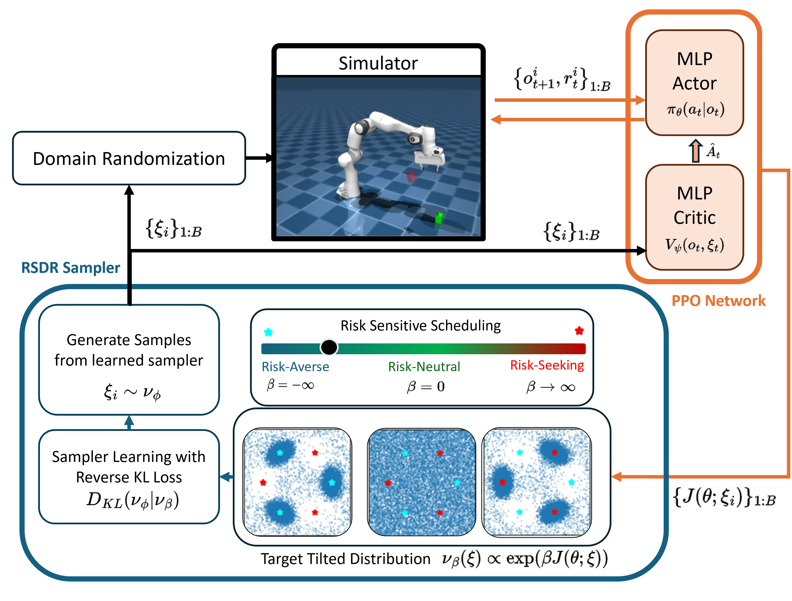
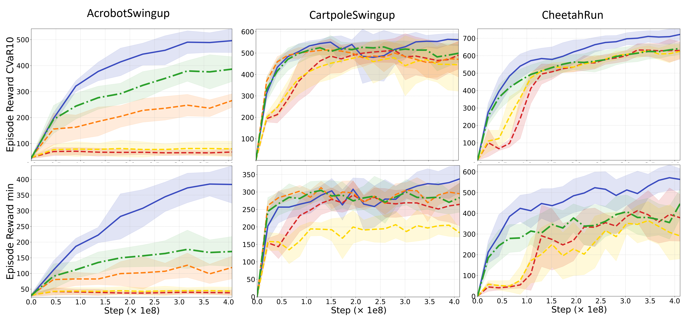
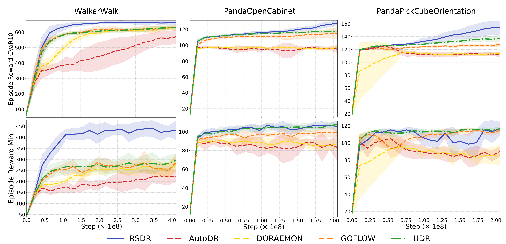

RSDR: Distributionally Robust Domain Randomization
with Learned Risk-Sensitive Dynamics Samplers
NeurIPS 2026SpotlightTop 1.3%
Oral + Spotlight: 404 of 30,709 valid Main Track submissions [source]
Seoul National University
Abstract
Domain randomization trains policies over randomized simulator dynamics, but optimizing average performance under a fixed sampler can overlook rare, difficult domains. We introduce Risk-Sensitive Domain Randomization (RSDR), a distributionally robust approach to episodic domain randomization with a KL-regularized entropic objective. Its soft adversary yields an exponentially tilted family of dynamics distributions: negative risk parameters emphasize low-return domains, zero recovers the reference distribution, and positive parameters favor high-return domains.
RSDR learns an amortized sampler through reverse-KL variational inference, reusing on-policy PPO trajectories as its target changes with the policy. Across six domain-randomized MuJoCo Playground tasks, risk-averse RSDR improves tail and minimum-return performance over uniform and adaptive domain randomization baselines, and outperforms the best-tuned EPOpt configurations on the four tasks used for that comparison.
Overview
Domain randomization trains a policy across different simulator dynamics. A uniform sampler treats every condition equally, even when a small part of the domain is much harder to control.
RSDR adapts the sampling distribution to the policy. Its risk-averse setting puts more training probability on low-return dynamics, while retaining a KL regularization toward the reference distribution. As the policy improves, the sampler follows the changing return landscape.
The result is a policy trained with difficult conditions in view. We assess robustness with the average of the worst 10% of domain returns (CVaR10) and minimum return.
Method
The same on-policy trajectories update both, without additional environment interactions for sampler learning.

- 01
Sample dynamics
Draw a dynamics parameter vector from the learned sampler and hold it fixed for the episode.
- 02
Update the policy
Collect rollouts and update the actor and asymmetric critic with PPO.
- 03
Update the sampler
Reuse those returns to fit an exponentially tilted target distribution by reverse-KL variational inference.
Risk-tilted target
The reference density is reweighted by the policy’s expected episode return. A negative β puts more probability on low-return dynamics.
Learning the sampler
The learned sampler fits this target by reverse-KL variational inference, reusing the policy’s training rollouts.
How RSDR samples dynamics

Experiments
Six MuJoCo Playground tasks.
Mean ± standard deviation over 10 training seeds.
For each dynamics setting, episodic returns are averaged over 10 evaluation seeds. The manuscript evaluates a 64 × 64 grid for 2D domains and 16,384 uniformly sampled settings for higher-dimensional tasks.
CVaR10 measures the average return across the worst-performing 10% of evaluated dynamics settings. Higher values indicate better tail performance.
| Task | Uniform DR | Best EPOpt | RSDR |
|---|---|---|---|
| AcrobotSwingup | 386.42 ± 48.05 | 360.84 ± 88.85 | 496.01 ± 45.81 |
| CartpoleSwingup | 499.04 ± 41.93 | 548.44 ± 26.35 | 570.84 ± 19.43 |
| CheetahRun | 641.75 ± 33.99 | 697.49 ± 62.73 | 722.14 ± 32.45 |
| WalkerWalk | 629.43 ± 15.26 | 637.63 ± 11.96 | 671.70 ± 10.07 |
RSDR β = −30 / −20 / −30 / −20; best EPOpt ε = 0.9 / 0.8 / 0.4 / 0.7, in task order. Hyperparameters are selected separately for each metric.
Manipulation results & original figures
| Task | Uniform DR | RSDR |
|---|---|---|
| PandaOpenCabinet | 117.48 ± 1.29 | 133.30 ± 2.99 |
| PandaPickCubeOrientation | 137.35 ± 4.83 | 156.38 ± 4.91 |




The table reports the manuscript’s multi-seed study. The videos below are separate illustrative runs. All evaluations shown here are in simulation.
Policy demonstrations
Episode reward
Episode reward
Episode reward
Gripper μ = 3.29; handle μ = 3.40. Nominal μ = 1.00 for both contacts.
Episode reward
Same physical condition and initial state for both policies. Episode reward is the cumulative return of each displayed rollout.
Citation
@inproceedings{jeong2026rsdr,
title = {Distributionally Robust Domain Randomization with
Learned Risk-Sensitive Dynamics Samplers},
author = {Jeong, Sukchul and Yang, Insoon},
booktitle = {Advances in Neural Information Processing Systems},
year = {2026},
url = {https://neurips.cc/virtual/2026/loc/sydney/poster/150440}
}